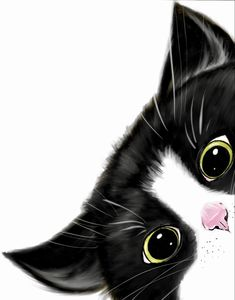
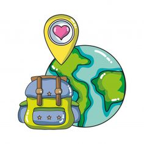
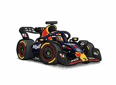
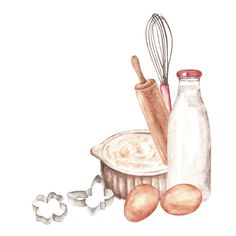
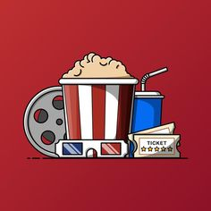
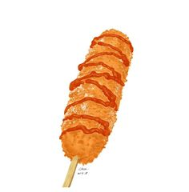
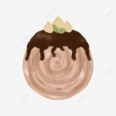
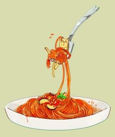

HOME
ABOUT
SCHEDULE
FAVORITE
CONTACT US
Favorite Part of My Life
1. Pet

Anje
Anje was my beloved pet for 13 years. He passed away recently on May 9, leaving behind cherished memories.
2. Hobby

Travelling
I have a passion for traveling the world. So far, I have visited 11 countries. My first memorable flight was when I was 10 years old.
3. Hobby

Formula 1
I started watching F1 because of my dad and my brother. I've been a fan since the Vettel 'beast' era
4. Hobby

Baking
love to bake kuih raya, and I started baking on my own when the MCO began
5. Hobby

Movie
I fill my leisure time by watching Netflix or going to the cinema. Recently, I watched Kung Fu Panda 4 and Inside Out.>
6. Hobby
Bouquet
I love receiving and giving flowers. I buy myself a bouquet whenever I feel like it, place them in a vase, and let them dry beautifully.
7. Food

Corndog
I love the crunchiness and the stretchy cheese in it.
8. Food

Cromboloni
I've loved croissants my whole life, but now, cromboloni just makes everything better
9. Food

Spaghetti
Nothing beats carbonra.